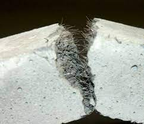

¡ PONEMOS EL MUNDO EN TUS MANOS !
El uso de plásticos reciclados como aditivos en el concreto ha cobrado importancia en los últimos años debido a la creciente necesidad de reducir el impacto ambiental de la construcción y la disposición de residuos plásticos. Además, se ha demostrado que esta práctica puede mejorar las propiedades mecánicas del concreto. Un estudio realizado por Siddique et al. (2018) evaluó el efecto de los residuos plásticos reciclados como aditivos en la resistencia a la compresión del concreto. Los resultados mostraron que la adición de plásticos reciclados mejoró significativamente la resistencia a la compresión del concreto en un 10-20%. Este aumento en la resistencia se atribuyó a la capacidad del plástico para actuar como reforzador y aumentar la cohesión y la tenacidad del concreto.
Otro estudio realizado por Kou et al. (2020) analizó el efecto de los residuos plásticos reciclados como aditivos en la resistencia a la flexión del concreto. Los resultados mostraron que la adición de plásticos reciclados mejoró la resistencia a la flexión en un 12-20%. Esto se debió a que el plástico reciclado aumentó la adherencia entre la matriz de concreto y los agregados, mejorando la resistencia a la tracción. Además de mejorar la resistencia del concreto, la adición de plásticos reciclados también puede mejorar la durabilidad y la resistencia al desgaste del concreto. Un estudio realizado por Kamaruddin et al. (2019) demostró que la adición de plásticos reciclados mejoró la resistencia al desgaste del concreto en un 31%. Esto se debió a que el plástico reciclado actúa como un agente de refuerzo y reduce la cantidad de microfisuras en el concreto. En resumen, el uso de plásticos reciclados como aditivos en el concreto puede mejorar significativamente las propiedades mecánicas del concreto, como la resistencia a la compresión, la resistencia a la flexión, la durabilidad y la resistencia al desgaste. Esta práctica puede ayudar a reducir la cantidad de residuos plásticos en el medio ambiente y mejorar la sostenibilidad de la construcción.